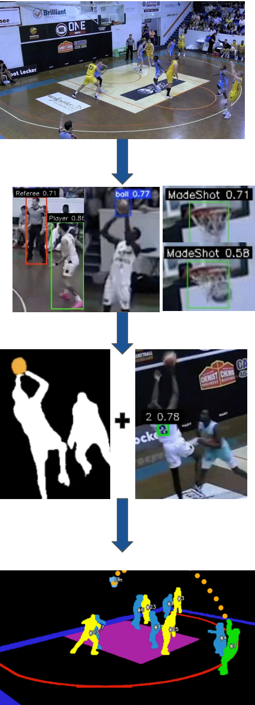
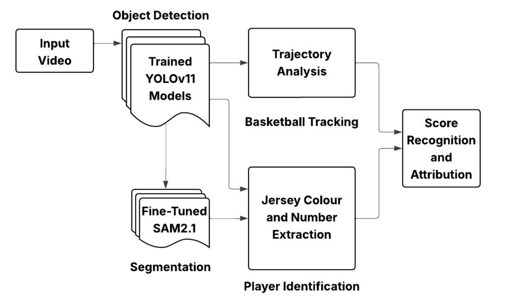
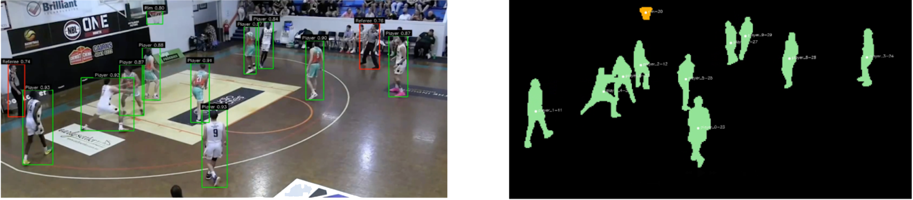
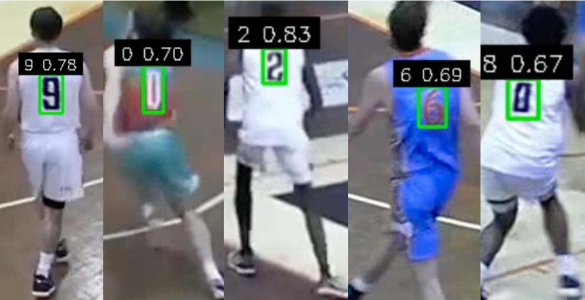
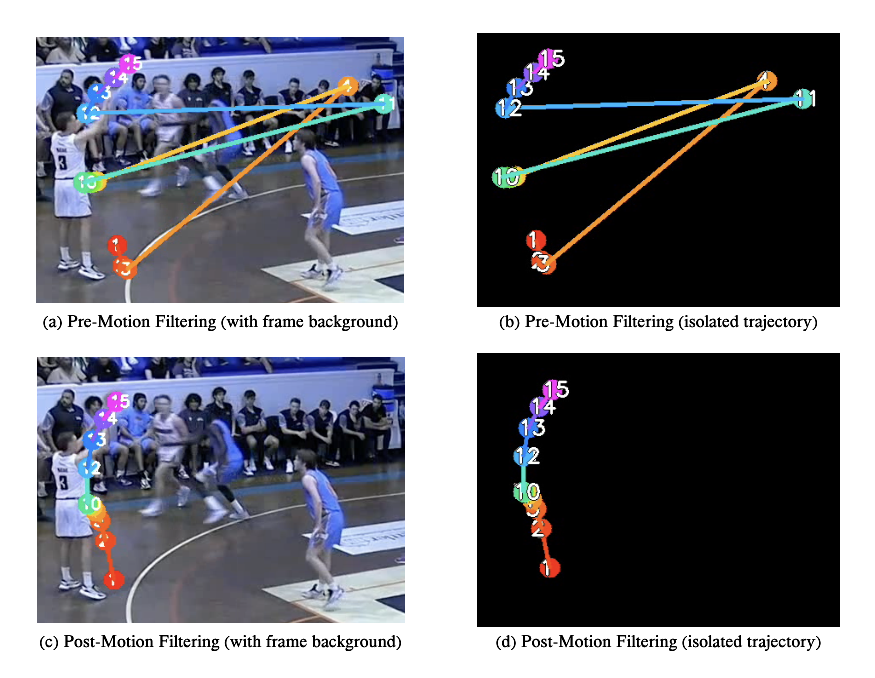
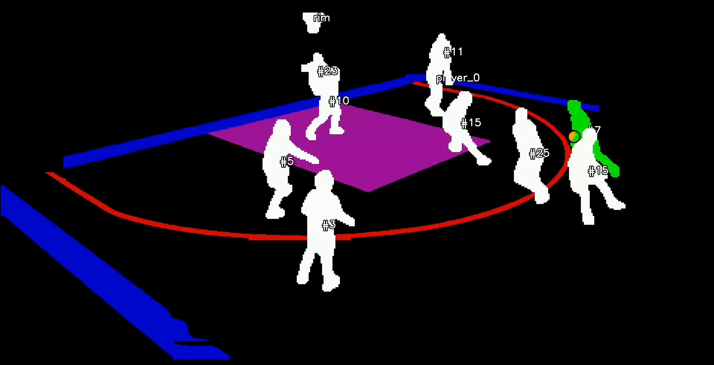

Sports Analytics Portfolio
Francis Weber
Analytical Modelling (NBL)
Advanced analytics modelling for the Australian NBL, built from raw play by play data to produce player impact estimates beyond what traditional box scores capture.
RAPM is a ridge regression model that estimates each player's individual impact on offence and defence, controlling for the quality of teammates and opponents they shared the floor with.
RAPM Process
Using the same lineup play by play data, RAPM takes a different approach to player impact than WOWY. Rather than splitting team performance by whether one player is on or off the floor, RAPM treats each possession as an observation and uses the ten players on court to explain the result of that possession. This lets us estimate player impact while controlling for the teammates and opponents they shared the floor with.
The main issue here is sample size. In the NBL, players often share a large portion of their minutes together, so a standard regression becomes unstable very quickly. To deal with this, ridge regularisation pulls player estimates back toward zero, which gives us more stable and reliable coefficients, especially for players with lower minute totals or heavy lineup overlap.
The model is run separately for offence and defence, producing an oRAPM and dRAPM which combine into a net figure for each player. The table places those estimates next to raw net rating so you can compare modelled impact against actual lineup results. The luck adjusted toggle applies the same three point normalisation used in WOWY, which keeps the two frameworks directly comparable.
WOWY splits team performance by whether a given player is on or off the floor, giving a direct read on how lineups perform with and without them. A luck adjustment is applied to three-point attempts in each split to strip out shooting variance.
| State | Min | Off | Def | Net |
|---|
WOWY Process
The first step in producing advanced on-off based analytics for the NBL is assessing the range of accessible data. By far the most valuable is play by play data, which describes events at a game clock state. Not only does this timestamp each statistical event, it also provides starters and substitutions. From this, we can infer two key factors at any given point in time: the full court lineups for both teams, and which team is on offense or defense for each possession.
This establishes the foundation for most advanced basketball analytics, allowing us to evaluate player impact beyond simple counting stats. Typically, possession level lineup data needs to already be provided, but by reconstructing lineups directly from the play by play, we can infer that structure ourselves.
WOWY (With or Without You) Lineups is a framework that allows us to evaluate team impact through lineup state splits. Using the lineup attributed play by play data produced, we can assign points scored, points allowed, and shooting outcomes to each player on/off state, then calculate offensive, defensive, and net ratings on a 100 possession basis. Analytically, WOWY is useful because it shows how team performance changes depending on whether a player is on or off the floor, helping separate true contextual impact from raw box score output.
The luck adjustment stabilises for the biggest source of statistical noise in WOWY splits, being three-point variance. Research has shown that 750 attempts are required to get a true estimate of a player’s skill from a 3PT%, and that team defence has minimal impact on the opponent raw 3PT%. Therefore I applied this expected percentage to the three point shots taken in each possession segment, replacing volatile make/miss outcomes with a skill baseline so on/off ratings reflect the process more than shooting swings.
A Blended Impact Metric that combines RAPM estimates with box score numbers trained on historical priors to produce a single player impact figure, plotted across career games so development curves can be compared directly across players.
Blended Impact Metric Process
My Blended Impact Metric estimates offensive and defensive value per 100 possessions by anchoring a box score signal to longer horizon impact data. I first trained ridge models to map a player's box profile to luck adjusted RAPM outcomes, then combined that box projection with an anchor built from each player's historical luck adjusted RAPM and box prior.
This gives a rating that is more stable than raw box production but still responsive to changes in role and form, with separate offensive, defensive, and net components. In practice it functions as a context aware, noise controlled read on true on court impact rather than a direct summary of traditional counting stats.
Visualisation (NBA)
Interactive NBA visualisations that make spatial and advanced analytics more intuitive, across shot location, game flow, and player appearance data.
Uses x,y shot location data to identify efficiency zones and prominent shot locations.
2D Shot Chart — Jayson Tatum 2025

Single season shot chart for Jayson Tatum, breaking down zone efficiency.
3D League Shot Bins
League wide shot data, split by decade, visualising the change in shot type approach and efficiency since 1996.
Notably, the rise in three point and decline in mid-range attempts has lead to improved average efficiency, and the distribution shaping around the three point line.
2D Shot Chart Process
Each NBA shot attempt since 1996 (play by play era) has an x and y location in relative inches attributed to it. From this, I drew basketball court map regions to the exact scale in Adobe Illustrator, and created a python script that maps a x,y coordinate to the corresponding pixel region on the SVG court image
Aggregating all shots through pandasdb, I was able to calculate the league average FG% for each zone, and then create a colour map encoding for player specific FG% deltas to visualise efficiency. Rendering the makes and misses, layered on the SVG, allows for shot volume identification, and crisp scaling on resizing the display
3D Shot Bins Process
To analyse league wide shot evolution, I grouped attempts into decade buckets (1990s, 2000s, 2010s, 2020s), then aggregated shot outcomes inside fixed spatial bins (1ft²) to compute points per shot for each bin. This creates a consistent way to compare efficiency profiles across eras from the same court geometry.
For the 3D visual, bin height is scaled by shot volume to produce a 3D histogram, demonstrating high traffic . Plotly renders the interactive bar surface with decade switching, and by keeping a consistent colour scale, the chart captures not only how shot diet has shifted, but also the broader rise in league wide scoring efficiency.
Uses playtype possession profiles (PCA) and nearest-neighbor similarity to map stylistic archetypes and closest player matches. This measures similarity in how players distribute possessions by action type, not the efficiency outputs of those actions.
Style Map (2016–Present)
Closest Style Matches
| Player | Similarity | Archetype | Style Mix |
|---|
Playtype Similarity Process
For each player, I build a playtype-distribution vector across the tracked offensive actions (for example: Isolation, P&R Ball Handler, Spot Up, Handoff, Cut, Post Up), using possession share as the feature space. This maps every player into the same N-dimensional style space, so comparisons are based on distribution of possesions, avoiding impact of heavy raw volume totals.
I standardise those vectors and apply PCA to project the N-dimensional distribution space into a 2D embedding that preserves the strongest style variance. Clustering and local network links are then computed in that same embedding to expose archetype neighborhoods. Nearest player similarity is measured from distance in the original style space so the analytics stay tied to the underlying possession-mix profile.
Uses per-game scoring outputs to plot TS% vs PPG, with each player shown as a headshot marker.

Headshot Graph Process
Player headshots are plotted by points per game and true shooting percentage, positioning each player visually within the league landscape of scoring output and efficiency.
Computer Vision Statistic Automation (Thesis)
My undergraduate thesis, in which I developed a computer vision workflow to automate stat extraction in single angle basketball footage.
Goal
Develop a computer vision pipeline that automates the collection of basketball box score statistics from single angle camera footage. This creates the foundation for more advanced analytics that are difficult or impossible to capture through human collection, such as player movement speed, shot quality, spatial tendencies, court location data, and defensive schemes.

Pipeline

Workflow
Using 10 games of raw broadcast footage from local NBL1 competition, 4,000 frames were manually annotated to train four specialised YOLOv11 models for basketball detection, jersey number detection, player vs referee classification, and made basket recognition.

YOLO + SAM2 Integration
By integrating the player detection model with Meta's Segment Anything Model 2 (SAM2), persistent segmentation and tracking of unseen footage was achieved. YOLO detections were used as prompts for SAM2, allowing individual players to be separated at the pixel level and followed through motion, overlap, and temporary occlusion.

While this segmentation process was mostly effective, additional logic was required to improve stability in game conditions. Player movement trajectories were analysed across frames to confirm identity continuity and reduce tracking swaps, while a separate YOLO basketball detector combined with spatial rules helped maintain reliable player association during heavy occlusion, contested rebounds, and crowded paint situations.

Movement & Positioning
The generated player masks were then used to estimate movement trajectories, velocities, and court positioning over time. This spatial information enabled the extraction of player paths, off ball movement, and positional context beyond standard box score data.

Player Identification
For player identification, detected jersey numbers were matched to segmented player masks, while a zero shot colour classification model was used to determine team colours. Combining these outputs allowed tracked players to be assigned persistent identities throughout the game.

Scoring Event Detection
Ball trajectory analysis, made shot detections, and player proximity to the release point were combined with court zone logic to infer the scorer and classify point value (two or three points). This produced an automated event log of made baskets linked to individual players and teams.

Overall, the system transforms raw broadcast video into structured statistical and positional datasets, demonstrating how low cost single camera footage can be used for advanced basketball analytics without dedicated tracking infrastructure.
